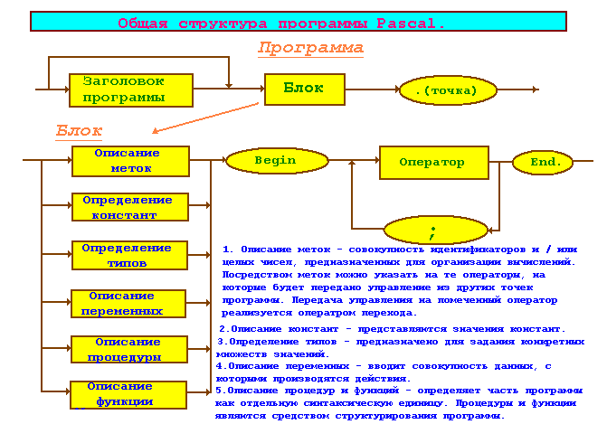

| Тема 3. Структура программы Pascal. | ||
| Назад | ||
|
СТРУКТУРА ПРОГРАММЫ. На рисунке 1 приводится блок схема структуры программы. 
Пояснения к структуре программы. «Обьявление программной единицы» – это заголовок программы, процедуры или функции; заголовок программы можно опускать без каких – либо последствий для программы; для процедур и функций наличие заголовка обязательно; «символ конца программной единицы» – символ " . " для программы или символ " ; " – для процедуры и функции. Любой из двух разделов программной единицы – раздел описаний или исполняемых операторов, или оба одновременно могут быть пустыми, т.е. не содержать никаких описаний или исполняемых операторов. В разделе описаний должны содержаться описания всех идентификаторов, используемых в разделе исполняемых операторов. Исключением являются идентификаторы, определенные в интерфейсных частях программных модулей (библиотек), а также глобальные для процедуры или функции идентификаторы. Если программная единица использует идентификатор из интерфейсной части какого – либо модуля , в начале программы в предложении USESнеобходимо указать имя этого модуля. Последнее не относится к идентификаторам, определенным в стандартном модуле SYSTEM, т.е. имя зтого модуля в предложении USESуказывать не нужно. Более того, модульSYSTEM считается предварительно объявленным, поэтому объявление Uses System; компилятор расценит как попытку двойного объявления модуля System и выдаст соответствующее сообщение об ошибке. В разделе описаний объявляются идентификаторы типов, объектов, констант, переменных, а также метки, процедуры и функции. Описанию типов и объектов должно предшествовать зарезервированное словоТУРЕ, описанию констант – CONST, переменных – VAR и меток – LABEL, например:
Type
DigType = set of '0' .. '9';
StrType = String [40];
Const
N = 100;
ESP = 1e-9;
Var
х,у : rеа1;
st : StrType;
LаЬеl
Lb1, Lb2;
В отличие от стандартного Паскаля разделы Type, Const, Var , Label могут следовать друг за другом в любом порядке и встречаться в разделе описаний сколько угодно раз. Описание процедуры или функции заключается в указании заголовка зтой процедуры (функции) и ее тела . р |
||
| Конспект подготовлен Бакулиным А. М. 2022 год. | ||